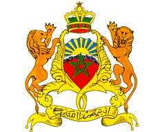
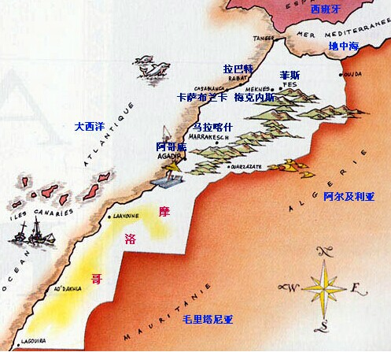

- 摩洛哥国旗
- 摩洛哥国徽
- 摩洛哥标志性建筑
- 摩洛哥地理位置
摩洛哥概况
摩洛哥王国是非洲西北部的一个国家
人口概况
32,777,000（2013年3月),阿拉伯人约占80%，柏柏尔人约占20%。阿拉伯语为国语。摩洛哥2006年文盲率为38.4%，国人大多数是伊斯兰教逊尼派教徒，此外还有少数犹太教徒和基督教徒。
摩洛哥经济
目前, 摩洛哥经济实力为非洲第五位, 在马格里布地区为第二位；摩洛哥1983年开始实行经济改革, 推行企业私有化和贸易自由化, 致力于优化经济结构, 加强基础设施, 改善投资环境, 取得一定成效。同时, 摩洛哥效仿爱沙尼亚与与中国, 凭借濒临大西洋与地中海的优势, 开放沿海, 建设港口城市, 如丹吉尔、卡萨布兰卡等, 到2012年, 丹吉尔港将成为非洲最大的港口。矿业是摩支柱产业, 矿产品出口占全部出口的30%。2004年, 摩与突尼斯、埃及、约旦签署了“阿加迪尔协定”, 宣布成立四国自由贸易区。同年, 摩分别与美国和土耳其签署双边自由贸易协议。
外交关系
奉行不结盟灵活、务实、多元的外交政策, 注重对外关系的均衡发展。维护民族独立和国家主权, 不断保持和加强与欧、美等西方国家的传统关系。注重加强阿拉伯世界的团结, 尤其重视与海湾国家发展关系。努力在国际事务, 特别是中东和平进程和伊斯兰世界中发挥作用。主张非洲国家团结, 但 1984 年因非洲统一组织(简称非统, 非洲联盟前身)接纳“西撒国”而宣布退出该组织。截至21世纪初，摩与近150个国家建立了外交关系。2012年1月就任联合国安理会非常任理事国。
经贸往来
摩同 90 多个国家和地区有贸易往来, 主要贸易伙伴为欧洲国家, 占摩进出口总额的 71 %, 法国是摩最大的贸易伙伴国。 2005 年外贸总额 293 亿美元, 其中进口 193 亿美元, 出口 100 亿美元。外国直接投资和私人贷款投资 29 亿美元。